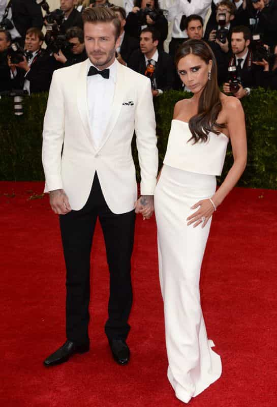
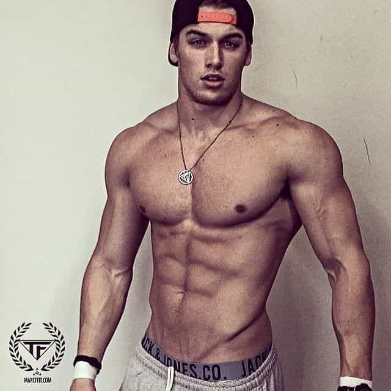
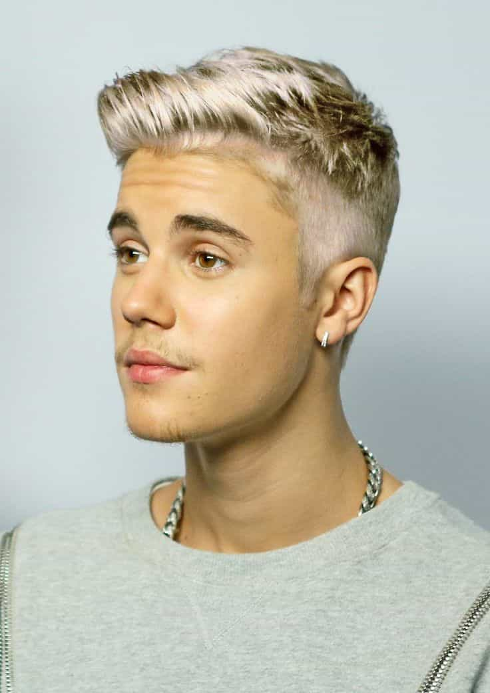
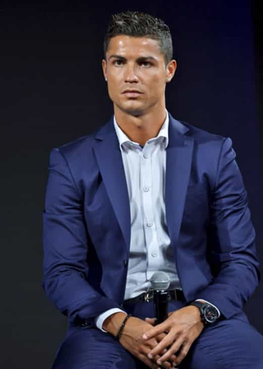
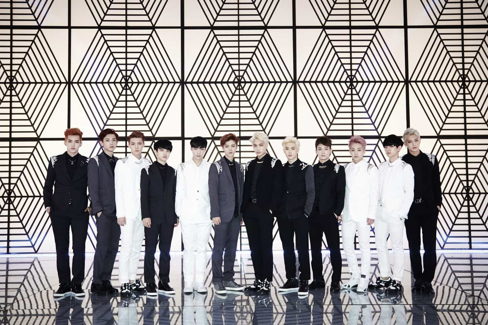

Over the years, ROK has presented manifold relevant articles on style and fashion, both linked to game and general respectability. Here I will add my own perspective and flavor to this dimension of self-improvement.
The argument builds on earlier articles on game, travel, and lifestyle optimization. Although one can regard this as a general self-improvement strategy, regardless of age and starting point, I think that this type of advice are for those who aim for to be in the top 20% of males and want to compete for the top 20% of women in the sexual marketplace, whether locally or globally.
Experience and underlying logic
Recently I went to Dubai with my girlfriend, dressed in white pants, white shoes and white jacket, but with black belt and black shirt in order to create a necessary contrast. Added to the mix I had my regular light-brown hair blended with dyed blonde and my body fat is currently about 13-14%. The response from virtually everyone was overwhelming, although I would add that part of the reason is because of my hot girlfriend. We looked like a really good couple.
For instance a Swedish girl who scanned our bags touched me in an semi-intimate way (sexual harassment someone!), I got looks from all sorts of males (like I was a respectable person, not in a homosexual way), and young Korean girls said 잘 생겼어요 at the airport (meaning handsome for a male).
Conversely, I got zero response when I wore dark green shorts and a regular blue t-shirt on the way back, and I only had to go to the toilet and be forced to take another line before guys at Schiphol (Amsterdam) started to approach and give compliments to my girl (who dressed casually).
It is not first time either that those extra efforts make the difference, and as long as a country or city is more or less Westernized – which includes for example the United States, South America, Europe, East Asia and Dubai – that kind of look works. It has a general, almost universal appeal.

The underlying reason is likely linked to biology, cultural programming, and more specifically cognitive sciences such as the prototype theory (often used in cognitive linguistics). Everyone has a concept of what a really attractive and successful person looks like. The more a person looks like the prototype of a generic celebrity, the better the response will be. Conversely, the more someone reminds other people of Average Joe the worse the response (although it would, of course, be even worse to look ugly).
Needless to say, a person’s preferences and specific cultural programming differs, but it is generally the same kind of pop stars, actors, models and sportsmen that show up in the media. Thus if someone says that you look like for instance Ryan Gosling, Christiano Ronaldo or Jusin Bieber, it is a good thing. The immediate positive association is linked to features such as low body fat, conspicuous and cool yet classy clothes, and matching hairstyle and hair color.
Below I have presented three concrete ways to maximize a male person’s style potential on the dating market and to be the best version of yourself in that regard. I have also added concrete examples on how to look so that the idea becomes clearer.
1. Shred down to about 10% of body fat

Notice that I wrote that I had 13-14% body fat above, which is good, but not exactly a maximal and optimal level where that chiseled, grim and masculine face emerges. One has to go slightly lower in order to get there. However, 13-14% is obviously better than the male average.
The question is if even lower than 10% is even better. Although it can depend from one individual to another – for instance with regard to where your remaining body fat is mostly concentrated, such as the face, ass or belly – there is much evidence to suggest that this is an optimal level for several common sense reasons.
Firstly, bear in mind the laws of diminishing returns and return on investment (ROI). It is hard enough to get down to 10% and to go even further will drain your energy levels, which will negatively effect your testosterone levels, strength and to some extent social savviness. Fitness then becomes a lifestyle that is simply too prioritized, at the expense of other facets of life. The opposite sex will generally not think that you look better with 8% body fat than 10% and might even start to think that it looks unhealthy.
Additionally, if you are not using anabolic steroids you can lose significant muscle volume, and the loss of too much fluid, which is part of a more extensive diet process, can even make you about half of an inch shorter. With that said 10% is better than 12% because it is likely that you will look better with the first- than the last-mentioned body fat level. Once again the fitness model Marc Fitt is an excellent example of how a 10% natural bodybuilder, that would look good in a suit, realistically can look like.
And forget about being “too big” these days. Virtually everyone is used to see global fitness stars such as Jeff Seid, Simeon Panda, and Jeremy Buendia online. Even in places like Japan and South Korea, where the thin and androgyne look has dominated, fitness is growing at a rapid speed due to Asians’ constant willingness to copy the West, although with some delay. Plus there is nearly impossible to become too big if you are a natural bodybuilder and reach the 10% mark.
Even if you do not dedicate yourself to the gym it is wise to build some muscles and/or to cut as much body fat as possible. You do not even have to use specific measurement tools. Just look at the picture below and make sure to get there by the means of combined resistance training and a high-protein diet.

2. Dye your hair blonde

Over the last four decades or so, a significant number of male celebrities have dyed their hair blonde. In current times one can think of Eminem, Justin Bieber, PewDiePie, and various K-pop stars. It generally looks better on whites and Asians, since white people already might have dark blonde or light-brown hair naturally, while Asians for some reason can look really cool as well, even though they have black hair biologically.
A blonde hair can add that extra dimension of conspicuousness and celebrity look that one needs in order to stand out from the rest of the crowd and contrast almost all colors that you are wearing besides yellow. Personally, I have done it occasionally since the mid-1990s.
Make sure to use the strongest types of blonding cream and use a silver shampoo several weeks afterwards. You do not want the silly yellow and even orange tones but the whiter and silverish look. As long as you follow those two simple advices you can do it on your own.
3. Dress like a pop star
Before I go on, I will make some clarifications and answer a few typical questions that tend to arise. First, there is no reason to not look like you are a bit more than your middle-income job and modest social status. Remember, this is for the top 20%, not the 2%, and the opinions of those much below 20%, who might say that you look gay and cater to women’s needs – the lesser betas, omegas and MGTOWs – you do not care about anyway.
How about not being yourself and copying other, more successful people? Only about 50% of your personality is inherited and to reiterate myself, there is no need to put imaginary limits on yourself. You will still not be Christiano Ronaldo even though you may look almost as well. That is not the point either, but to be the best version of yourself. Why would you not want as much positive feedback as possible? Well actually from other males too, in a platonic fashion.

Next, how does a pop star look? Obviously that depends but I do have a high-class yet conspicuous look in mind, which is mostly fitting in clubs and restaurants, and at upscale dinners and parties. One can find concrete examples here and there but I think that the K-pop celebs often dress the best, or at least have that little extra edge, as long as they keep their masculine elements.
Just avoid the borderline homosexual paraphernalia, such as pink, gloves, make-up, and really weird outfits that will only work in a music video or live setting. Likely, you will also add your own masculine aura with some beard, age, broad shoulders and the already mentioned chiseled face, creating a perfect balance that will make multiple pussies wet worldwide. It depends on your taste and you as an individual, but do not be afraid of looking gay or androgyne. It is super-easy to avoid if you just have common sense and a sense of style.
There is obviously an economic dimension in all of this, which is not the case with the above-mentioned things. Two ways to optimize costs and benefits are to focus on the jacket and shoes and buy the rest from cheap clothes stores such as H&M. No one will notice your pants or t-shirt as long as they look okay when the shoes, hair and jacket are the focal points.
Keep looking for cool and somewhat original jackets online or offline and preferably with heavy discounts. You can sometimes get a lot with only 200 dollars per each pair or item. If you have more money to spend, a more expensive brand such as Dior can be worth the cost every now and then, although I myself am hesitant to spend as much as 3000 dollars on a jacket.

In summary
These comparatively small efforts and improvements can make a big difference in a competitive society. Although one can adjust a bit depending on taste and individual differences, I can assure you that these tips can improve your real and perceived value a lot. It will be easier to get 6s and 7s, and those 8s and 9s that you think that you almost do not deserve, are suddenly within your reach.
Read More: A Beginner’s Guide To Dressing Well